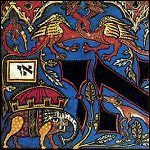
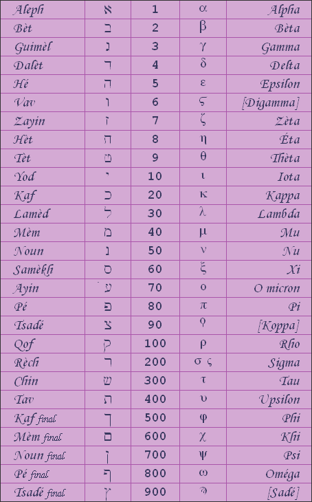
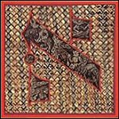
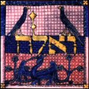

|
(…) the Kabbalah considers that man builds and renews the meaning of the original text. Haïm Brezis, Jewish mathematician |

Gematria
With the Kabbalah, Hebrew letters are also numbers; a text written in Hebrew is therefore an
encrypted document. The Kabbalah consequently becomes a "way of making numbers talk". This relationship between the numbers
and letters is called Gematria.
The Greeks know of and previously used an identical conversion process
to Gematria, called isopsephia.
Correspondence table between the Hebrew and Greek alphabets

With conventional Gematria, the values of the letters in a word or name are added up
and compared to other words with the same total.
By using this method, Kabbalists say, for example, that "God is Love and Unity". In Hebrew, love is Aavah
(Aleph, He, Bet, He), which gives 1 + 5 + 2 + 5 = 13;
unity is Ekhad (Aleph, Het, Dalet), which gives
1 + 8 + 4 = 13. The words love and unity are therefore equivalent. God
or Yahve (Yod, He, Vav, He) is equal to
10 + 5 + 6 + 5 = 26, in other words 13 + 13.
This aim of using this way to encode or decode texts is to make the mind more supple by
increasing the number of similarities between different words. In addition, it can be used
to convey important information in an innocuous format.
Notaricon

The Notaricon is a second process for reading sacred texts. It consists of considering each letter of a word as the abbreviation of a whole phrase (principle of an acronym). The title of the Kabbalah's key book, the Zohar (Zayin, He, Rech), is generally translated as "splendour". It can be interpreted as the acronym of the following phrase: Zeh Ha Reshit, which means "this is the beginning". Using the Notaricon, an apparently simple word may actually turn out to have hidden meanings.Temurah

Finally, Kabbalists often use a third reading process that consists of swapping around the letters in a word according to a precise set of rules. Applying this principle to the first word of Genesis, Bereshit ("In the beginning") shows a striking example of the use of Temurah. Bereshit is written Bet, Rech, Aleph, Chin, Yod, Tav, but Bereshit is also Berit-Esh (Bet, Rech, Yod, Tav - Aleph, Chin), which means "Covenant of Fire". Could Genesis be linked to ancient solar cults? In any case, Temurah shows us that fire had already appeared before the heavens, earth and oceans.